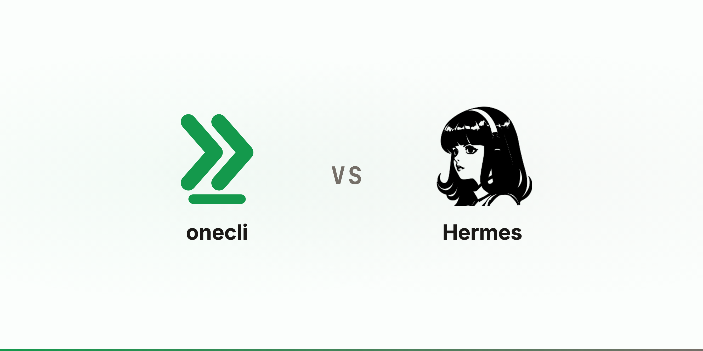

Compare
OneCLI vs Hermes
Hermes is a single-tenant personal agent that holds your credentials. OneCLI is one agent per employee, and the sandbox holds none.
UpdatedThe short version
Credit first. Hermes is built by Nous Research, MIT licensed, and it is the only agent we know of shipping a real closed learning loop: it writes skills from experience, improves them while using them, and searches its own past conversations. Our agents do not do that, and it runs on more backends than we offer.
Now the part that decides which one a company can deploy. Hermes' SECURITY.md says it outright: "the only security boundary against an adversarial LLM is the operating system." That is a clear and correct statement of a single-user design. It also means the credentials are in the room with the model. OneCLI's architecture exists to delete that room.


Honest but wrong, versus wrong for any reason
Hermes protects you from an agent that is honest but wrong. The approval gate, the deny rules, the blocklists: all of it screens what the model emits, inside the process the model influences. Hermes says so itself, classing every one as a heuristic rather than a boundary. That is right for a single operator who wants a net under their own mistakes.
OneCLI protects you from an agent that is wrong for any reason at all: a poisoned web page, a skill nobody read, a model having a bad day. The enforcement point is outside the sandbox. The agent boots with placeholder keys, the network refuses any egress that is not the gateway, and the real credential is spliced in on the way out after the request is checked. No prompt to talk around, no key file to read.
How they differ
Who it is for
onecli
A company. One agent per employee, provisioned centrally, with an org above itHermes
One person. A single-tenant personal agent, by explicit designonecli
Every agent is tied to an employee, and its access is scoped to what that person already hasHermes
No per-user model inside an instance: "within the authorized set, all callers are equally trusted"onecli
Multi-tenant. One deployment holds the whole org, with users, teams, and per-person scoping inside itHermes
Single-tenant by design. One operator per instance, so forty people means forty instances to run and updateCredentials
onecli
Placeholders. Real keys are injected at the wire and never enter the sandbox, including the model keyHermes
Real credentials, in a credential file and in process memoryonecli
There is nothing to exfiltrate. The attacker inherits the agent's policy, not its keys, and every request they attempt is still checkedHermes
Credentials are stripped from shell, MCP, and code-execution subprocesses, which Hermes calls a reduction in casual exfiltration and explicitly not containment. Anything in-process, skills and plugins included, can read themonecli
Also a placeholder. The gateway substitutes the real token per request, so model spend is metered and attributable per employeeHermes
A real provider key or Portal token in the environmentEnforcement
onecli
The network. The sandbox sits on an internal network with exactly two reachable destinations, so bypassing the gateway is impossible rather than merely discouragedHermes
The operating system, by their own statement. In-process screening is documented as heuristics that "are not boundaries"onecli
Every outbound request, whatever produced it: an MCP tool call, a CLI, curl in a shell, or code the agent wrote a second agoHermes
Shell commands matched against dangerous-pattern lists and globs, plus file-write path denylistsonecli
The request is held at the gateway. It cannot proceed until someone approves, and the hold is enforced outside the agentHermes
An in-loop prompt to the operator, with smart mode using an auxiliary LLM to auto-approve low-risk commands. Container backends skip the checks entirelyonecli
No YOLO mode exists. Policy is set by the org, not the agent's user, and the agent cannot widen its own scopeHermes
--yolo, /yolo, HERMES_YOLO_MODE=1, or approvals.mode: off disable prompts for the session, above a small hardline blocklistWhere Hermes wins
onecli
Shared skills and per-agent instructions, authored by peopleHermes
Autonomous skill creation, self-improving skills, agent-curated memory, and cross-session recallonecli
Apache-2.0 outside the ee/ directories and free to self-host, including on your own hardware; the hosted product is priced per user and agentHermes
MIT throughout, free, with an optional Nous Portal subscription for models and managed toolsThe gateway word means two different things
Both products say "gateway" and mean opposite things, which is the most common confusion between them. The Nous Tool Gateway routes web search, images, and TTS through Nous' infrastructure so you do not need five API accounts. Their docs put it right: "the gateway isn't a lock-in, it's a shortcut." OneCLI's gateway is an enforcement layer over everything: a checkpoint every outbound packet must pass, whether it is headed for a Nous endpoint, the GitHub API, or something the agent found five seconds ago. A request the policy denies never leaves the box.
Their security policy describes our architecture
For the posture it calls whole-process wrapping, Hermes' own policy recommends NVIDIA OpenShell and describes what that buys: declarative filesystem, network, and process policy, with credentials injected from a provider store that never touch the sandbox filesystem. That is our architecture, written by them, as the thing to bolt on when the agent reads content the operator does not control, which for a company agent is always. The difference is assembly: with Hermes it is an operator project repeated for every employee, and with OneCLI it is the product.
When to use which
Use Hermes when
- ·You are one person and you want the most capable personal agent available, for free
- ·The learning loop is the point: skills that write and improve themselves, memory that deepens across sessions
- ·You want it in Telegram, WhatsApp, or Signal, not just Slack
- ·You want MIT-licensed code to fork, and are comfortable owning the security posture
- ·You are doing agent research: batch trajectories, training tool-calling models
Use OneCLI when
- ·You are deploying agents to employees, and cannot ask each of them to run a sysadmin's checklist
- ·The agent must never hold a credential, because you cannot vet every skill and web page it reads
- ·You need per-request control: block the destructive call, hold the sensitive one for a human
- ·Each person's agent must be scoped to their own access, so support cannot reach payroll
- ·Someone will ask what every agent did last quarter, and one audit log has to answer it
- ·You want one deployment to operate for the whole org, self-hosted if you prefer, not one per person
Common questions
Isn't Hermes' Docker backend the same as your sandbox?
Can I run Hermes behind OneCLI?
Hermes' security policy is unusually candid. Doesn't that make it safer?
Does OneCLI have Hermes' self-improving skills?
What about the rest of what Hermes does: cron, subagents, memory, the TUI?
Both are open source and self-hostable. What actually differs?
Also compared
Try it
Be greedy about AI. Never about access.
$ curl -fsSL onecli.sh/install | sh